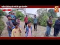

Bilaspur News Hub
NEWS62

Nai Dunia Bilaspur · Published: Tue, 15 Se | Scraped: 2026-09-15 14:35:00
<img src="https://img.naidunia.com/naidunia/ndnimg/15092026/15_09_2026-cghightcourtbsp.jpg" />छत्तीसगढ़ हाई कोर्ट ने फैसला सुनाया है कि आपसी समझौता न होने पर लोक अदालत विवादों का फैसला नहीं कर सकती। अदालत ने सीएसपीडीसीएल की याचिका स्वीकार करते हुए लोक अदालत का अवार्ड और श्रम न्यायालय का आदेश रद कर द

Nai Dunia Bilaspur · Published: Tue, 15 Se | Scraped: 2026-09-15 14:35:00
<img src="https://img.naidunia.com/naidunia/ndnimg/15092026/15_09_2026-2017adeshkharij.jpg" />सुप्रीम कोर्ट ने 2017 की कांस्टेबल भर्ती से जुड़ी छत्तीसगढ़ सरकार की एसएलपी खारिज कर दी है। इससे हाई कोर्ट के फैसले पर मुहर लग गई है और 400 से अधिक प्रतीक्षारत अभ्यर्थियों की नियुक्ति का रास्ता साफ हो गया ह

Nai Dunia Bilaspur · Published: Tue, 15 Se | Scraped: 2026-09-15 14:35:00
<img src="https://img.naidunia.com/naidunia/ndnimg/15092026/15_09_2026-kustipratiyogita66.jpg" />रायगढ़ के मोती महल परिसर में 16 और 17 सितंबर को अखिल भारतीय एवं राज्य स्तरीय कुश्ती प्रतियोगिता का आयोजन किया जाएगा, जिसमें विजेता पहलवानों को एक लाख तक के पुरस्कार मिलेंगे। इसके साथ ही 17 सितंबर से 'सेव

Nai Dunia Bilaspur · Published: Tue, 15 Se | Scraped: 2026-09-15 14:35:00
<img src="https://img.naidunia.com/naidunia/ndnimg/15092026/15_09_2026-cimsbsp4.jpg" />मौसम में बदलाव के साथ बिलासपुर में वायरल इंफेक्शन का प्रकोप तेजी से बढ़ा है। सिम्स समेत अन्य अस्पतालों की ओपीडी में रोजाना 2,000 से अधिक मरीज पहुंच रहे हैं, जिनमें से 25 प्रतिशत मरीज सर्दी-खांसी और बदन दर्द से पीड

Nai Dunia Bilaspur · Published: Tue, 15 Se | Scraped: 2026-09-15 14:35:00
<img src="https://img.naidunia.com/naidunia/ndnimg/15092026/15_09_2026-cg_high_court_transfer_stay_15sep.jpg" />सहायक ग्रेड-2 से सहायक ग्रेड-1 पद पर पदोन्नत अविनाश कुमार कंवर ने 1 जुलाई 2026 को कोरबा क्षेत्रीय कार्यालय में कार्यभार ग्रहण किया था, लेकिन 10 जुलाई को उनका तबादला जगदलपुर कर दिया गया।

CG Wall · Published: Tue, 15 Se | Scraped: 2026-09-15 14:35:00
<p><img alt="90% ओबीसी-एससी आबादी, फिर भी सुविधाएं अधूरी; दोमुहानी बोला—अब चाहिए अपना वार्ड" class="attachment-medium size-medium wp-post-image" height="225" src="https://cgwall.in/wp-content/uploads/2026/09/IMG-20260915-WA0026-300x225.webp" title="90% ओबीसी-एससी आबादी, फिर भी सुविधाएं अधूरी; दोमुहा

Lokswar · Published: Tue, 15 Se | Scraped: 2026-09-15 14:35:00
<p>रायपुर – छत्तीसगढ़ की समृद्ध ऐतिहासिक, सांस्कृतिक और पुरातात्विक विरासत को वैश्विक स्तर पर पहचान दिलाने की दिशा में एक महत्वपूर्ण पहल के तहत छत्तीसगढ़ टूरिज्म बोर्ड ने जापान के मत्सुयामा स्थित एहिमे यूनिवर्सिटी के 17 सदस्यीय अंतरराष्ट्रीय प्रतिनिधिमंडल के लिए विशेष हेरिटेज टूर का आयोजन किया।
Lokswar · Published: Tue, 15 Se | Scraped: 2026-09-15 14:35:00
<p>रायगढ़ जिले के कापू थाना क्षेत्र में ग्रामीण की हत्या के मामले में पुलिस ने महज 24 घंटे के भीतर आरोपी को गिरफ्तार कर हत्या की गुत्थी सुलझा ली है। ग्राम पखनाकोट में 50 वर्षीय चैतराम यादव उर्फ महेश यादव की टांगी से वार कर हत्या कर दी गई थी। वारदात के बाद पुलिस ने …</p>
<p>The post <a href="ht

Lokswar · Published: Tue, 15 Se | Scraped: 2026-09-15 14:35:00
<p>रायपुर – राजधानी रायपुर के तेलीबांधा मरीन ड्राइव में सड़क किनारे पसरा लगाकर मिट्टी के दीये बेच रही मीरा के लिए आज का दिन अचानक बेहद खास बन गया। रोज की तरह वह अपने छोटे से पसरे पर दीये सजाकर ग्राहकों की प्रतीक्षा कर रही थी। इसी बीच मुख्यमंत्री श्री विष्णु देव साय का काफिला …</p>
<p>The

Lokswar · Published: Tue, 15 Se | Scraped: 2026-09-15 14:35:00
<p>रायपुर में प्रधानमंत्री आवास के मुद्दे पर गृह मंत्री विजय शर्मा और पूर्व मुख्यमंत्री भूपेश बघेल आमने-सामने नजर आए। दोनों नेताओं के बीच प्रधानमंत्री आवास को लेकर बहस हुई। https://www.youtube.com/live/mQ0bDqQyFU8?si=-qgqkp2OdLrOrZVi दरअसल, गृह मंत्री विजय शर्मा ने प्रधानमंत्री आवास के मुद्दे को लेक

Nai Dunia Bilaspur · Published: Tue, 15 Se | Scraped: 2026-09-15 19:22:32
<img src="https://img.naidunia.com/naidunia/ndnimg/15092026/15_09_2026-nagadwasulihospitl.jpg" />बिलासपुर में आयुष्मान भारत योजना के तहत पंजीकृत 10 से 12 बड़े निजी अस्पताल मरीजों से नकद वसूली और पैकेज से राशि काटने का अवैध खेल खेल रहे हैं। सीएमएचओ डॉ. शुभा गरेवाल ने शिकायतों के बाद ऐसे अस्पतालों पर

Nai Dunia Bilaspur · Published: Tue, 15 Se | Scraped: 2026-09-15 19:22:32
<img src="https://img.naidunia.com/naidunia/ndnimg/15092026/15_09_2026-accusedsumit.jpg" />जीपीएम जिले के गौरेला थाना अंतर्गत ग्राम अंजनी की झाड़ियों में मिली बिहार निवासी लक्ष्मी कुमारी की हत्या की गुत्थी पुलिस ने सुलझा ली है। आरोपी पति सुमित कुमार यादव ने 9 सितंबर की रात अपनी पत्नी को परिचित के सा

Nai Dunia Bilaspur · Published: Tue, 15 Se | Scraped: 2026-09-15 19:22:32
<img src="https://img.naidunia.com/naidunia/ndnimg/15092026/15_09_2026-courtbsp1_.jpg.jpg" />छत्तीसगढ़ हाई कोर्ट ने दुर्घटना के चलते वन रेंजर का वॉकिंग टेस्ट न दे पाने वाले अभ्यर्थी योगेश बंजारे को बड़ी राहत दी है। कोर्ट ने राज्य सरकार को 60 दिन के भीतर उसका फिजिकल टेस्ट दोबारा आयोजित करने का निर्दे

CG Wall · Published: Tue, 15 Se | Scraped: 2026-09-15 19:22:32
<p><img alt="हुड़दंग की तैयारी है तो सावधान! त्योहारों से पहले बदमाशों को थाने बुलाकर पुलिस ने चेताया" class="attachment-medium size-medium wp-post-image" height="300" src="https://cgwall.in/wp-content/uploads/2026/09/20260915_214920-300x300.webp" title="हुड़दंग की तैयारी है तो सावधान! त्योहारों से

CG Wall · Published: Tue, 15 Se | Scraped: 2026-09-15 19:22:32
<p><img alt="सड़क पर पटाखा बजाया तो अब सीधे कोर्ट का रास्ता, दर्जनों गाडियों पर यातायात पुलिस की कार्रवाई" class="attachment-medium size-medium wp-post-image" height="300" src="https://cgwall.in/wp-content/uploads/2026/09/20260915_213857-300x300.webp" title="सड़क पर पटाखा बजाया तो अब सीधे कोर्ट का र

CG Wall · Published: Tue, 15 Se | Scraped: 2026-09-15 19:22:32
<p><img alt="नशे में झगड़ा, फिर सीने पर धारदार वार… संबलपुरी में युवक की मौत, आरोपी गिरफ्तार" class="attachment-medium size-medium wp-post-image" height="137" src="https://cgwall.in/wp-content/uploads/2026/09/IMG-20260915-WA0041-300x137.webp" title="नशे में झगड़ा, फिर सीने पर धारदार वार…

CG Wall · Published: Tue, 15 Se | Scraped: 2026-09-15 19:22:32
<p><img alt="तीन रात का खौफ, दो गाड़ियां आग के हवाले; जांच आगे बढ़ी तो एक ही चेहरा निकला" class="attachment-medium size-medium wp-post-image" height="300" src="https://cgwall.in/wp-content/uploads/2026/09/IMG-20260915-WA0039-169x300.webp" title="तीन रात का खौफ, दो गाड़ियां आग के हवाले; जांच आगे बढ़ी

CG Wall · Published: Tue, 15 Se | Scraped: 2026-09-15 19:22:32
<p><img alt="कारोबार से आगे बढ़ा सरोकार, व्यापारिक संगठन ने जरूरतमंदों के लिए दिए 5 लाख" class="attachment-medium size-medium wp-post-image" height="230" src="https://cgwall.in/wp-content/uploads/2026/09/IMG-20260915-WA0037-300x230.webp" title="कारोबार से आगे बढ़ा सरोकार, व्यापारिक संगठन ने जरूरतमंद
Lokswar · Published: Tue, 15 Se | Scraped: 2026-09-15 19:22:32
<p>रायगढ़ शहर के रामभांठा इलाके में उस वक्त सनसनी फैल गई, जब पुराने बस डिपो के पास एक खाली प्लॉट में 16 वर्षीय किशोर का शव मिला। किशोर बीती रात करीब 9 बजे चक्रधर समारोह देखने जाने की बात कहकर घर से निकला था, लेकिन इसके बाद वह घर वापस नहीं लौटा। सुबह शव मिलने …</p>
<p>The post <a href="https://
Lokswar · Published: Tue, 15 Se | Scraped: 2026-09-15 19:22:32
<p>बिलासपुर के सकरी थाना क्षेत्र के संबलपुरी गांव में गणेश पंडाल के पास साउंड सिस्टम को लेकर हुआ विवाद जानलेवा साबित हुआ। मामूली विवाद के बाद दो युवकों के बीच झगड़ा शुरू हुआ और देखते ही देखते एक युवक पर चाकू से हमला कर दिया गया। हमले में गंभीर रूप से घायल 22 वर्षीय युवक …</p>
<p>The post <a hr
YOUTUBE VIDEOS15


GRAND NEWS BILASPUR: FINAL NEWS 15.09.2026 MORNING @News18MPChhattisgarh @IBC24InNews @ZeeNews ...


GRAND NEWS BILASPUR : EVENING FINAL NEWS 15 .09.2026 NEWS @News18MPChhattisgarh @IBC24InNews @ZeeNews ...
GRAND NEWS BILASPUR:लोखंडी गैंगवार पर बवाल @News18MPChhattisgarh @IBC24InNews @ZeeNews ...
GRAND NEWS BILASPUR:70 से ज्यादा बदमाशों को पुलिस की सख्त चेतावनी ...
GRAND NEWS BILASPUR:एरमसाही समिति में खाद घोटाले का आरोप @News18MPChhattisgarh ...
लोखंडी गैंगवार में युवक की मौत के बाद एसपी कार्यालय घेरने पहुंचे परिजन, पुलिस कार्रवाई पर उठाए सवाल
50 किलो ड्रायफ्रूट से सजी गणपति प्रतिमा बनी आकर्षण का केंद्र
सेवा संकल्प अभियान को जनभागीदारी का व्यापक स्वरूप देने के निर्देश
हाईवे पर अचानक सामने आया लोनर हाथी, वीडियो बनाने करीब पहुंचे लोगों को दौड़ाया

15-20 साल से सड़क का इंतजार, बारिश में कीचड़ और पानी बना मुसीबत, नाली, पानी
सर्पदंश के बाद अस्पताल की जगह झाड़फूंक में गंवाया वक्त, महिला की मौत
पांच साल में ही पीएमजीएसवाई सड़कें बदहाल, गड्ढों और उखड़े डामर ने खोली गुणवत्ता की पोल
पीएम आवास पर छत्तीसगढ़ में फिर सियासी संग्राम, बीजेपी-कांग्रेस आमने-सामने